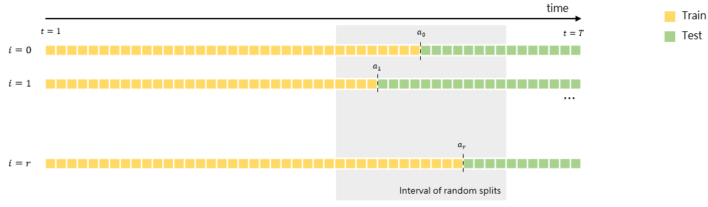
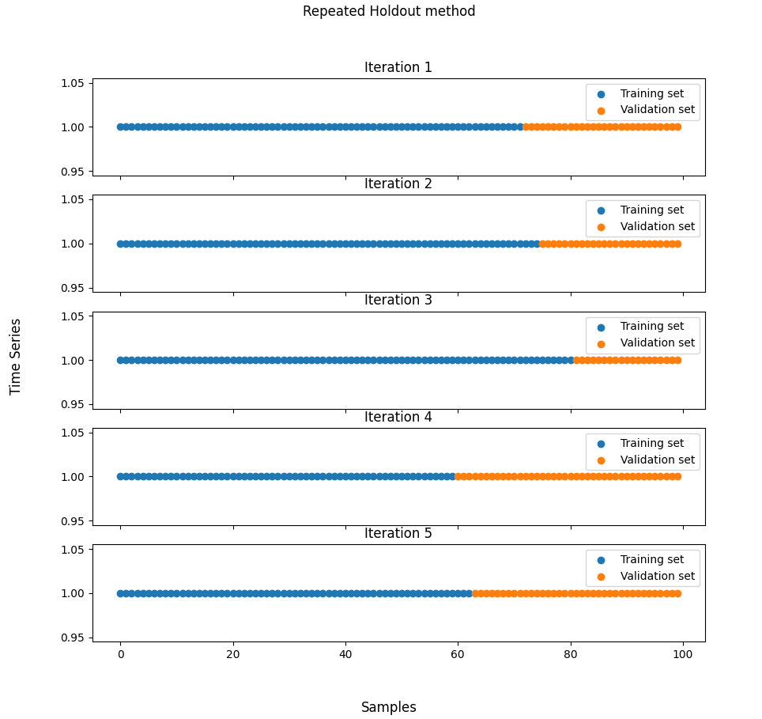

Repeated Holdout method
timecave.validation_methods.OOS.RepeatedHoldout(ts, fs=1, iterations=5, splitting_interval=[0.7, 0.8], seed=0)
Bases: BaseSplitter
Implements the Repeated Holdout method.
This class implements the Repeated Holdout method. This is essentially an extension of the classic Holdout method, as it simply applies this method multiple times with a randomised splitting point. At every iteration, this point is chosen at random from an interval of values specified by the user. For this purpose, our implementation uses a uniform distribution, though, in theory, any continuous distribution could be used.
Parameters:
| Name | Type | Description | Default |
|---|---|---|---|
ts |
ndarray | Series
|
Univariate time series. |
required |
fs |
float | int
|
Sampling frequency (Hz). |
1
|
iterations |
int
|
Number of iterations that should be performed. |
5
|
splitting_interval |
list[int | float]
|
Interval from which the splitting point will be drawn. If the values are integers, they are interpreted as indices. Otherwise, they are regarded as the minimum and maximum allowable sizes for the training set. |
[0.7, 0.8]
|
seed |
int
|
Random seed. |
0
|
Attributes:
| Name | Type | Description |
|---|---|---|
n_splits |
int
|
The number of splits. |
sampling_freq |
int | float
|
The series' sampling frequency (Hz). |
Methods:
| Name | Description |
|---|---|
split |
Split the time series into training and validation sets. |
info |
Provide additional information on the validation method. |
statistics |
Compute relevant statistics for both training and validation sets. |
plot |
Plot the partitioned time series. |
Raises:
| Type | Description |
|---|---|
TypeError
|
If the |
ValueError
|
If the |
TypeError
|
If the splitting interval is not a list. |
ValueError
|
If the splitting interval list does not contain two values. |
See also
Holdout: The classic Holdout method.
Notes
The Repeated Holdout method is an extension of the classic Holdout method. Essentially, the Holdout method is applied multiple times, and an average of the error on the validation set is used as an estimate of the model's true error. At every iteration, the splitting point (and therefore the training and validation set sizes) is computed randomly from an interval of values specified by the user.

Compared to the classic Holdout method, it has a greater computational cost, though, depending on the number of iterations and the prediction model, this may be negligible. For more details on this method, the reader should refer to [1].
References
1
Vitor Cerqueira, Luis Torgo, and Igor Mozetic. Evaluating time series fore- casting models: An empirical study on performance estimation methods. Machine Learning, 109(11):19972028, 2020.
Source code in timecave/validation_methods/OOS.py
info()
Provide some basic information on the training and validation sets.
This method displays the average, minimum and maximum validation set sizes.
Examples:
>>> import numpy as np
>>> from timecave.validation_methods.OOS import RepeatedHoldout
>>> ts = np.ones(10);
>>> splitter = RepeatedHoldout(ts, splitting_interval=[0.6, 0.9]);
>>> splitter.info();
Repeated Holdout method
-----------------------
Time series size: 10 samples
Average validation set size: 3.4 samples (34.0 %)
Maximum validation set size: 4 samples (40.0 %)
Minimum validation set size: 3 samples (30.0 %)
Source code in timecave/validation_methods/OOS.py
plot(height, width)
Plot the partitioned time series.
This method allows the user to plot the partitioned time series. The training and validation sets are plotted using different colours.
Parameters:
| Name | Type | Description | Default |
|---|---|---|---|
height |
int
|
The figure's height. |
required |
width |
int
|
The figure's width. |
required |
Examples:
>>> import numpy as np
>>> from timecave.validation_methods.OOS import RepeatedHoldout
>>> ts = np.ones(100);
>>> splitter = RepeatedHoldout(ts, splitting_interval=[0.6, 0.9]);
>>> splitter.plot(10, 10);

Source code in timecave/validation_methods/OOS.py
split()
Split the time series into training and validation sets.
This method splits the series' indices into disjoint sets containing the training and validation indices.
At every iteration, an array of training indices and another one containing the validation indices are generated.
Note that this method is a generator. To access the indices, use the next() method or a for loop.
Yields:
| Type | Description |
|---|---|
ndarray
|
Array of training indices. |
ndarray
|
Array of validation indices. |
float
|
Used for compatibility reasons. Irrelevant for this method. |
Examples:
>>> import numpy as np
>>> from timecave.validation_methods.OOS import RepeatedHoldout
>>> ts = np.ones(100);
If the splitting interval consists of two floats, the method assumes they define the minimum and maximum training set sizes:
>>> splitter = RepeatedHoldout(ts, splitting_interval=[0.6, 0.8]);
>>> for ind, (train, val, _) in enumerate(splitter.split()):
...
... print(f"Iteration {ind+1}");
... print(f"# training samples: {train.shape[0]}");
... print(f"# validation samples: {val.shape[0]}");
Iteration 1
# training samples: 72
# validation samples: 28
Iteration 2
# training samples: 75
# validation samples: 25
Iteration 3
# training samples: 60
# validation samples: 40
Iteration 4
# training samples: 63
# validation samples: 37
Iteration 5
# training samples: 63
# validation samples: 37
If two integers are specified instead, they will be regarded as indices.
>>> splitter = RepeatedHoldout(ts, splitting_interval=[80, 95]);
>>> for ind, (train, val, _) in enumerate(splitter.split()):
...
... print(f"Iteration {ind+1}");
... print(f"# training samples: {train.shape[0]}");
... print(f"# validation samples: {val.shape[0]}");
Iteration 1
# training samples: 92
# validation samples: 8
Iteration 2
# training samples: 85
# validation samples: 15
Iteration 3
# training samples: 80
# validation samples: 20
Iteration 4
# training samples: 83
# validation samples: 17
Iteration 5
# training samples: 91
# validation samples: 9
Source code in timecave/validation_methods/OOS.py
541 542 543 544 545 546 547 548 549 550 551 552 553 554 555 556 557 558 559 560 561 562 563 564 565 566 567 568 569 570 571 572 573 574 575 576 577 578 579 580 581 582 583 584 585 586 587 588 589 590 591 592 593 594 595 596 597 598 599 600 601 602 603 604 605 606 607 608 609 610 611 612 613 614 615 616 617 618 619 620 | |
statistics()
Compute relevant statistics for both training and validation sets.
This method computes relevant time series features, such as mean, strength-of-trend, etc. for both the whole time series, the training set and the validation set. It can and should be used to ensure that the characteristics of both the training and validation sets are, statistically speaking, similar to those of the time series one wishes to forecast. If this is not the case, using the validation method will most likely lead to a poor assessment of the model's performance.
Returns:
| Type | Description |
|---|---|
DataFrame
|
Relevant features for the entire time series. |
DataFrame
|
Relevant features for the training set. |
DataFrame
|
Relevant features for the validation set. |
Raises:
| Type | Description |
|---|---|
ValueError
|
If the time series is composed of less than three samples. |
Examples:
>>> import numpy as np
>>> from timecave.validation_methods.OOS import RepeatedHoldout
>>> ts = np.hstack((np.ones(5), np.zeros(5)));
>>> splitter = RepeatedHoldout(ts, splitting_interval=[0.6, 0.9]);
>>> ts_stats, training_stats, validation_stats = splitter.statistics();
Frequency features are only meaningful if the correct sampling frequency is passed to the class.
>>> ts_stats
Mean Median Min Max Variance P2P_amplitude Trend_slope Spectral_centroid Spectral_rolloff Spectral_entropy Strength_of_trend Mean_crossing_rate Median_crossing_rate
0 0.5 0.5 0.0 1.0 0.25 1.0 -0.151515 0.114058 0.5 0.38717 1.59099 0.111111 0.111111
>>> training_stats
Mean Median Min Max Variance P2P_amplitude Trend_slope Spectral_centroid Spectral_rolloff Spectral_entropy Strength_of_trend Mean_crossing_rate Median_crossing_rate
0 0.833333 1.0 0.0 1.0 0.138889 1.0 -0.142857 0.125000 0.500000 0.792481 0.931695 0.200000 0.200000
0 0.714286 1.0 0.0 1.0 0.204082 1.0 -0.178571 0.094706 0.428571 0.556506 1.212183 0.166667 0.166667
0 0.833333 1.0 0.0 1.0 0.138889 1.0 -0.142857 0.125000 0.500000 0.792481 0.931695 0.200000 0.200000
0 0.714286 1.0 0.0 1.0 0.204082 1.0 -0.178571 0.094706 0.428571 0.556506 1.212183 0.166667 0.166667
0 0.714286 1.0 0.0 1.0 0.204082 1.0 -0.178571 0.094706 0.428571 0.556506 1.212183 0.166667 0.166667
>>> validation_stats
Mean Median Min Max Variance P2P_amplitude Trend_slope Spectral_centroid Spectral_rolloff Spectral_entropy Strength_of_trend Mean_crossing_rate Median_crossing_rate
0 0.0 0.0 0.0 0.0 0.0 0.0 0.0 0 0.0 0.0 inf 0.0 0.0
0 0.0 0.0 0.0 0.0 0.0 0.0 0.0 0 0.0 0.0 inf 0.0 0.0
0 0.0 0.0 0.0 0.0 0.0 0.0 0.0 0 0.0 0.0 inf 0.0 0.0
0 0.0 0.0 0.0 0.0 0.0 0.0 0.0 0 0.0 0.0 inf 0.0 0.0
0 0.0 0.0 0.0 0.0 0.0 0.0 0.0 0 0.0 0.0 inf 0.0 0.0
Source code in timecave/validation_methods/OOS.py
658 659 660 661 662 663 664 665 666 667 668 669 670 671 672 673 674 675 676 677 678 679 680 681 682 683 684 685 686 687 688 689 690 691 692 693 694 695 696 697 698 699 700 701 702 703 704 705 706 707 708 709 710 711 712 713 714 715 716 717 718 719 720 721 722 723 724 725 726 727 728 729 730 731 732 733 734 735 736 737 738 739 740 741 742 743 744 745 746 747 748 749 750 751 752 753 754 755 756 757 758 | |